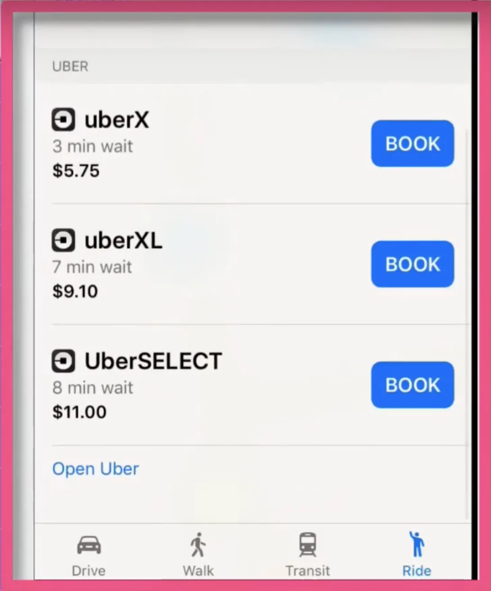

Guide to Integrating Lyft, Uber, and OpenTable with Apple Maps on iPad
Lyft App Integration with Apple Maps on iPad
Integrating popular apps like Lyft, Uber, and OpenTable with Apple Maps can enhance your travel and dining experiences. This guide will demonstrate how to activate these extensions on your iPad.
Activating Extensions in Apple Maps
- Open the Settings app on your device and navigate to "Maps."
- Scroll down to the bottom of the page and find the "Extensions" section.
- Toggle on the extensions for Lyft, Uber, and other apps you wish to use. Note: You must be subscribed to Lyft or Uber for them to work.
Using Lyft and Uber Integration in Maps
With the extensions activated, you can now use Lyft and Uber directly from Apple Maps. Here's how:
- Open Apple Maps and pick a destination, like Paddy Murphy's Irish Pub.
- Click on the directions, and at the bottom, you'll see ride options.
- Select "Ride" to order Lyft or Uber directly from the app.

OpenTable Integration in Maps
You can also make restaurant reservations directly through Apple Maps using OpenTable:
- Click on the search bar in Maps and choose a restaurant from the available options.
- Click on the restaurant's name, and you'll see reservation options at the top.
- Make a reservation without having to leave the Maps app.
Conclusion
By activating these extensions in Apple Maps, you can seamlessly book rides and make restaurant reservations without leaving the app. With more extensions like Yelp and the built-in Apple Pay feature, your traveling experiences with your Apple device can be more convenient and enjoyable.
For a visual guide, you can watch this YouTube video on BYOD Apple device enrollment scenarios and demos.